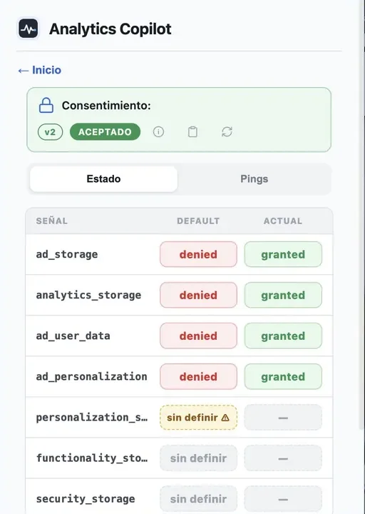
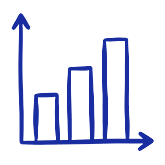
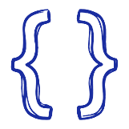
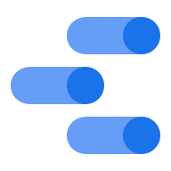
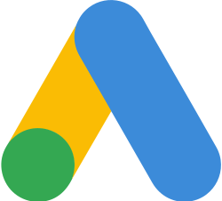
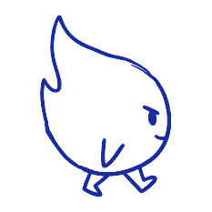

Analytics Copilot
Audita GA4, GTM, Google Ads y Consent Mode desde el navegador, sin abrir la pestaña Network. Funciona en local y no envía ningún dato fuera.
sustituye a todas mis extensiones


Antonio Luis Pérez
En Product Hackers. Más de 1.000 webs trackeadas a lo largo de mi trayectoria.
Creador de Analytics Copilot, una extensión gratuita para auditar GA4, GTM y Consent Mode.
Herramientas con las que trabajo

Looker Studio
Google AdsEn LinkedIn
con capturas y sin datos de clientes
Diagnósticos reales de medición, paso a paso.
Las herramientas que construyo.
Novedades de medición web en cuanto salen.
Cómo aprender medición rápido si estás empezando.
Diagnóstico de ejemplo
Sesiones diarias en GA4 de una tienda online inventada. Algo se rompió y no ha vuelto. Haz clic en el día en que empezó.
haz clic donde se rompió
Herramientas

Audita GA4, GTM, Google Ads y Consent Mode desde el navegador, sin abrir la pestaña Network. Funciona en local y no envía ningún dato fuera.
sustituye a todas mis extensiones
Mi laboratorio de analítica web sin cookies ni banner de consentimiento. Mide esta misma web.
Construye y valida URLs con UTM, también por lotes desde un CSV.
Tapa datos sensibles en imágenes y PDF sin subir nada.
Blog
En español, de momento.
empieza por la de GA4
Sobre mí
Vengo del marketing y me quedé por los datos.

Ago 2024
Junior Digital Analyst
Abr 2025
Web & Data Analyst en Paraty Tech
Dashboards automatizados replicados a más de 100 clientes
May 2026
Web Analytics Team Lead
Un equipo de 3 y más de 1.000 webs de hoteles
Nov 2026
Analytics Engineer en Product Hackers
y esto acaba de empezar
Contacto
Para charlas, podcasts o colaboraciones.
Suelo responder en el día.